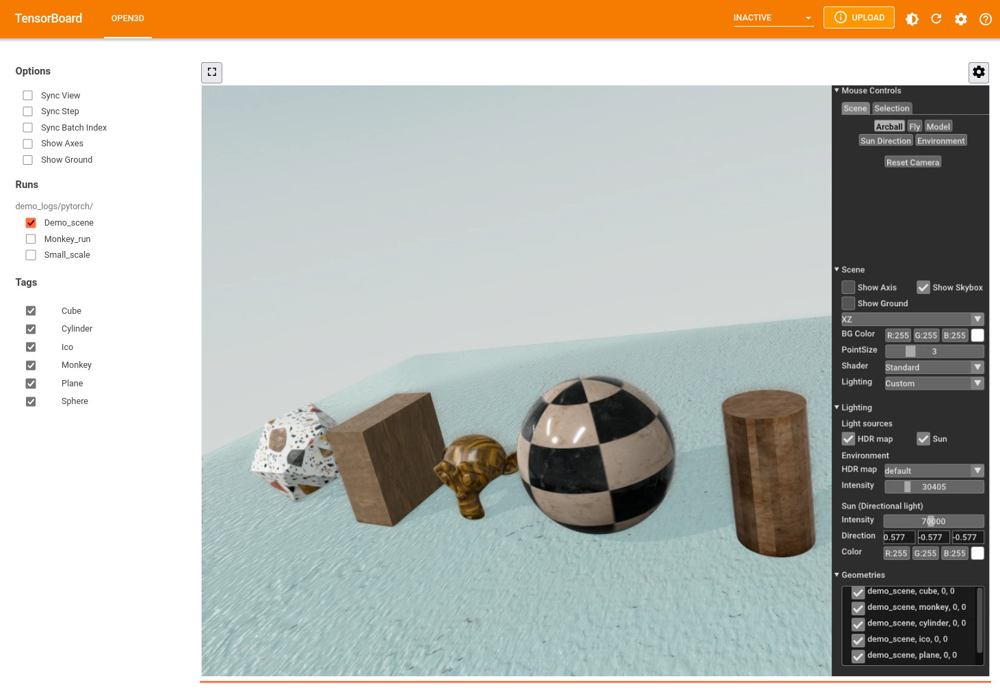

Open3D for TensorBoard¶
Now you can use Open3D within TensorBoard for interactive 3D visualization. Here are some of the exciting features:
Save and visualize geometry sequences along with their properties. Watch how your 3D data updates over training or any processing steps and gain deeper insight into your 3D algorithms.
Support for PBR materials. Your 3D data and models will look as amazing in Tensorboard as in Open3D. Your materials can also change over algorithm steps.
Dedicated support for visualizing 3D semantic segmentation and 3D object detection input data, ground truth and results. Customize your data visualization through in-browser controls. In addition, any scalar or vector custom property can be visualized for point clouds to help you debug your 3D algorithms easily.
Easily compare results from different runs of your algorithm with features such as synchronized time step and viewpoint.

You can save 3D data as TensorBoard summary when working with either TensorFlow
or PyTorch. The 3D data is saved as ‘.msgpack’ files (serialized Open3D geometry
data) in the plugins/Open3D sub-folder with the event files. The examples
described below are available in the
examples/python/gui/tensorboard_pytorch.py and
examples/python/gui/tensorboard_tensorflow.py files in the Open3D
repository. Also see the
add_3d() function documentation for a complete description of supported 3D
geometry and material properties.
Note:
Summary writing works on all platforms, and the visualization can be accessed from a browser on any platform. Running the tensorboard process is not supported on macOS as yet.
Simple geometry sequences¶
To get started, let’s save and visualize simple geometry data such as a cube and cylinder. The color of the model changes at each step. First, we will setup the required imports and create some simple geometry data.
import open3d as o3d
# Monkey-patch torch.utils.tensorboard.SummaryWriter
from open3d.visualization.tensorboard_plugin import summary
# Utility function to convert Open3D geometry to a dictionary format
from open3d.visualization.tensorboard_plugin.util import to_dict_batch
from torch.utils.tensorboard import SummaryWriter
cube = o3d.geometry.TriangleMesh.create_box(1, 2, 4)
cube.compute_vertex_normals()
cylinder = o3d.geometry.TriangleMesh.create_cylinder(radius=1.0,
height=2.0,
resolution=20,
split=4)
cylinder.compute_vertex_normals()
colors = [(1.0, 0.0, 0.0), (0.0, 1.0, 0.0), (0.0, 0.0, 1.0)]
Now lets write this as a summary.
logdir = "demo_logs/pytorch/small_scale"
writer = SummaryWriter(logdir)
for step in range(3):
cube.paint_uniform_color(colors[step])
writer.add_3d('cube', to_dict_batch([cube]), step=step)
cylinder.paint_uniform_color(colors[step])
writer.add_3d('cylinder', to_dict_batch([cylinder]), step=step)
TensorFlow users¶
The repository contains code examples for both PyTorch and TensorFlow. Here is
the corresponding TensorFlow code. The main differences to note are that
add_3d() is an independent function in the module
open3d.visualization.tensorboard_plugin.summary and requires a logdir
argument. TensorFlow tensors are also accepted in data.
import open3d as o3d
from open3d.visualization.tensorboard_plugin import summary
# Utility function to convert Open3D geometry to a dictionary format
from open3d.visualization.tensorboard_plugin.util import to_dict_batch
import tensorflow as tf
# ... geometry creation code as above ...
logdir = "demo_logs/tf/small_scale"
writer = tf.summary.create_file_writer(logdir)
with writer.as_default():
for step in range(3):
cube.paint_uniform_color(colors[step])
summary.add_3d('cube', to_dict_batch([cube]), step=step, logdir=logdir)
cylinder.paint_uniform_color(colors[step])
summary.add_3d('cylinder', to_dict_batch([cylinder]), step=step,
logdir=logdir)
You can run this example either by pasting the code above in a Python prompt, or running the example as:
python examples/python/gui/tensorboard_pytorch.py small_scale
Now start tensorboard to visualize the data with:
tensorboard --logdir demo_logs/pytorch
In a Jupyter notebook, you can instead use:
%load_ext tensorboard
%tensorboard --logdir demo_logs/pytorch
The widget showing each run is an O3DVisualizer window displayed over WebRTC,
so all Open3D controls (such as zoom, pan, rotate view, change Sunlight
direction, etc.) are available. Click the gear icon on the top right of the
window to access more controls such as the background color and point size.
Note that in this example, only the colors change while the vertices, edges and
normals are the same at each step. We can instruct Open3D to reuse geometry
properties from an earlier step, instead of writing redundant data to the
summary files. Replace the for loop above with:
for step in range(3):
cube.paint_uniform_color(colors[step])
cube_summary = to_dict_batch([cube])
if step > 0:
cube_summary['vertex_positions'] = 0
cube_summary['vertex_normals'] = 0
writer.add_3d('cube', cube_summary, step=step)
cylinder.paint_uniform_color(colors[step])
cylinder_summary = to_dict_batch([cylinder])
if step > 0:
cylinder_summary['vertex_positions'] = 0
cylinder_summary['vertex_normals'] = 0
writer.add_3d('cylinder', cylinder_summary, step=step)
The geometry property tensor is replaced with an integer (step reference) pointing to an earlier step as a source of this geometry property. You can run this example with
python examples/python/gui/tensorboard_pytorch.py property_reference
The summary folder size will be smaller, but you will see the same geometry displayed in tensorboard.
Rich 3D models with PBR materials¶
In addition to geometry properties, we can save and visualize rich 3D models using PBR material properties.
model_dir = "examples/test_data/monkey"
logdir = "demo_logs/pytorch/monkey"
model = o3d.t.geometry.TriangleMesh.from_legacy(
o3d.io.read_triangle_mesh(os.path.join(model_dir, "monkey.obj")))
# Create geometry dict
summary_3d = {
"vertex_positions": model.vertex["positions"],
"vertex_normals": model.vertex["normals"],
"triangle_texture_uvs": model.triangle["texture_uvs"],
"triangle_indices": model.triangle["indices"],
"material_name": "defaultLit"
}
# translate material property names (from texture map file names) to Open3D
# names, if needed.
names_to_o3dprop = {"ao": "ambient_occlusion"}
for texture in ("albedo", "normal", "ao", "metallic", "roughness"):
texture_file = os.path.join(model_dir, texture + ".png")
if os.path.exists(texture_file):
texture = names_to_o3dprop.get(texture, texture)
summary_3d.update({
("material_texture_map_" + texture):
o3d.t.io.read_image(texture_file)
})
# "metallic" texture map needs the base metallic scalar property.
if texture == "metallic":
summary_3d.update(material_scalar_metallic=1.0)
writer = SummaryWriter(logdir)
writer.add_3d("monkey", summary_3d, step=0)
PBR material properties may be either scalar (such as metallic) or a 4 element
vector (such as base_color) for properties that are uniform for the entire
geometry. Spatially varying material properties are represented as texture map
images and are mapped to the geometry surface based on the UV coordinates. So,
UV coordinates (one of vertex_texture_uvs or triangle_texture_uvs) must be
provided with any texture map. The keys for the properties are of the form
material_[TYPE]_[PROP_NAME] where TYPE is scalar, vector or
texture_map. In the example above, the keys used were
material_texture_map_albedo, material_texture_map_normal,
material_texture_map_ambient_occlusion, material_texture_map_metallic and
material_texture_map_roughness. We also provide a material_name that
specifies the Open3D material shader used.
3DML models training and inference¶
3DML models from Open3D have built in support for visualizing input data, ground
truth and network predictions. Edit the YAML configuration files for your
model+dataset combination in the ml3d/configs folder in the Open3D-ML
repository to start saving summary 3D data:
# Open3D for Tensorboard summary (3D data)
summary:
# Record summary in these stages (from train, valid, test)
record_for: ['valid']
# Subsample point cloud if n_pts exceeds this value. Empty => save all
# points in the summary.
max_pts: 10000
# Only write input point cloud in the first epoch. In other epochs, use
# reference to the first step. Do not use if each epoch has a different
# order of minibatches. Do not use for RandLaNet or KPConv.
use_reference: false
# Write at most this many samples in each batch
max_outputs: 1
This configuration will only save summary data during the validation stage. Each
point cloud will be uniformly sub-sampled to a maximum of 10000 points. From
each batch of data, only the first element will be saved. The use_reference
flag will only save point clouds for the first epoch and enter references to
that data for the remaining epochs. This will greatly reduce the size of your 3D
summaries as well as improving the responsiveness of visualization. But you
should not use this if each epoch goes through the mini-batches in a different
order.
Now you can visualize the data in TensorBoard as before. The web interface allows showing and hiding points with different classes, changing their colors, and exploring predictions and intermediate network features. Scalar network features can be visualized with custom user editable colormaps, and 3D features can be visualized as RGB colors. Here is a video showing the different ways in which semantic segmentation summary data can be visualized in TensorBoard.
And this one shows different ways of visualizing object detection data, including bounding boxes.
You can also visualize multiple runs in side by side widgets. To make it easy to compare data from different runs, The step,batch index and viewpoint of different runs can also be synchronized.
Next lets look at how to save 3D summaries from your own training code. The
examples below are in the examples/ folder in the Open3D-ML
repository.
Custom properties and semantic segmentation¶
We will read sample 3D point clouds and labels from disk and write them to a 3D
summary. We will also write some random scores and features to disk. The
workflow is the same when you want to write data during model training. Data may
be written as PyTorch, TensorFlow, or Open3D tensors or Numpy arrays. See
examples/tensorboard_pytorch.py or examples/tensorboard_tf.py in the
Open3D-ML repository for the complete example.
writer = SummaryWriter(join(BASE_LOGDIR, "semseg-example"))
for step in range(len(pcd_files)):
# We will pretend these are the inputs and outputs of a Semantic
# Segmentation model
# float, shape (N, 3), or (B, N, 3) for a batch
points = np.load(pcd_files[step])
# int, shape (N, 1), or (B, N, 1) for a batch
labels = np.load(label_files[step])
# We can also visualize noisy scores (car, road, vegetation)
scores = np.hstack((labels == 1, labels == 9, labels == 15))
scores = np.clip(scores + rng.normal(0., 0.05, size=scores.shape), 0.,
1.)
# and outputs of some pretend network layers. The first 3 dimensions
# can be visualized as RGB colors. Here we will use distances from the
# centroids of (all points, road, vegetation).
centroid_all = np.mean(points, axis=0)
d_all = np.linalg.norm(points - centroid_all, axis=1)
centroid_road = np.mean(points[np.squeeze(labels) == 9, :], axis=0)
d_road = np.linalg.norm(points - centroid_road, axis=1)
centroid_vegetation = np.mean(points[np.squeeze(labels) == 15, :],
axis=0)
d_vegetation = np.linalg.norm(points - centroid_vegetation, axis=1)
features = np.stack((d_all, d_road, d_vegetation), axis=1)
# You can use Torch tensors directly too.
# Prefix the data with "vertex_" for per vertex data.
writer.add_3d(
"semantic_segmentation",
{
"vertex_positions": points, # (N, 3)
"vertex_labels": labels, # (N, 1)
"vertex_scores": scores, # (N, 3)
"vertex_features": features # (N, 3)
},
step,
label_to_names=SEMANTIC_KITTI_LABELS)
3D object detection¶
Similar to semantic segmentation, we can save and visualize input point clouds, and output bounding box ground truth and predictions from object detection models. In the next example, we will read sample 3D point clouds and bounding boxes from disk and write them to a 3D summary. The workflow is the same when you want to write data during model training. Data may be written as PyTorch, TensorFlow, or Open3D tensors or Numpy arrays.
writer = SummaryWriter(join(BASE_LOGDIR, "objdet-example"))
for step in range(len(val_split)): # one pointcloud per step
data = val_split.get_data(step)
# We will pretend these are the inputs and outputs of an Object
# Detection model. You can use Torch tensors directly too.
writer.add_3d(
"input_pointcloud",
{ # float, shape (N, 3), or (B, N, 3) for a batch
"vertex_positions": data['point'][:, :3],
# Extra features: float, shape (N, 1), or (B, N, 1) for a batch
# [should not be (N,)]
"vertex_intensities": data['point'][:, 3:]
},
step)
# We need label_class to be int, not str
for bb in data['bounding_boxes']:
if not isinstance(bb.label_class, int):
bb.label_class = name_to_labels[bb.label_class]
# Bounding boxes (pretend model output): (Nbb, ) or (B, Nbb) for a batch
# Write bounding boxes in a separate call.
writer.add_3d("object_detection", {"bboxes": data['bounding_boxes']},
step,
label_to_names=dset.get_label_to_names())
Troubleshooting¶
If you cannot interact with the 3D model, or use controls in the WebRTC widget, make sure that Allow Autoplay is enabled for the Tensorboard web site and reload.